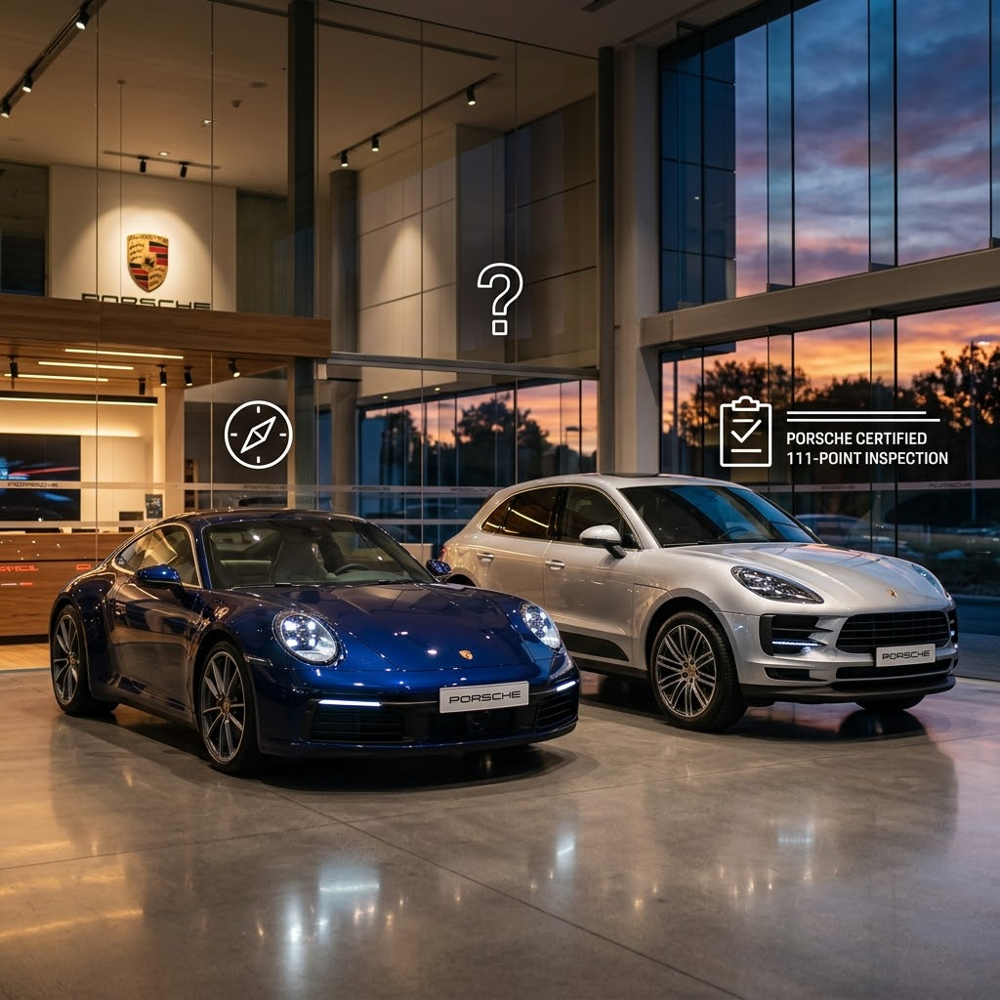
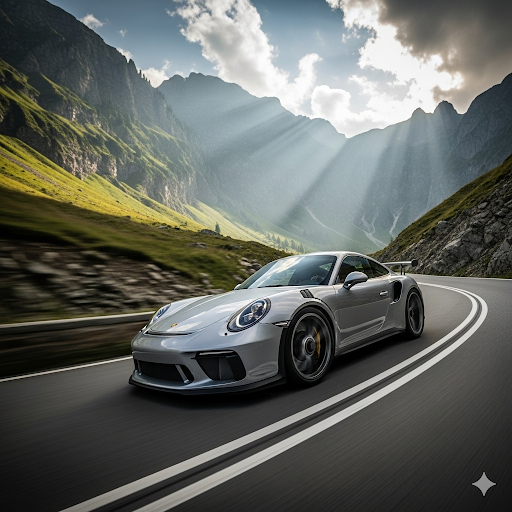
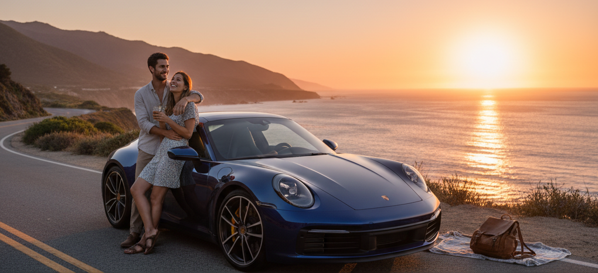
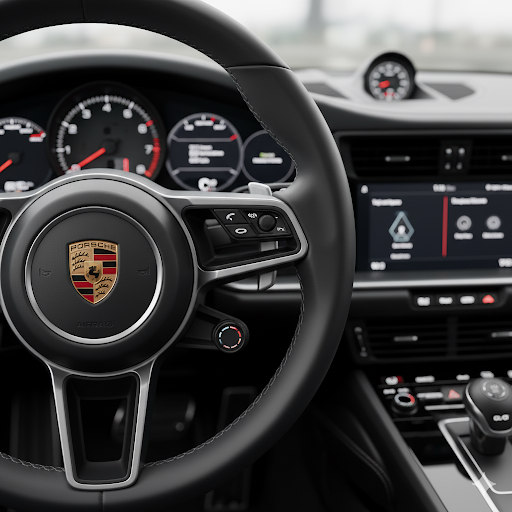
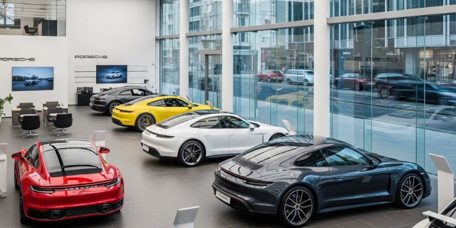
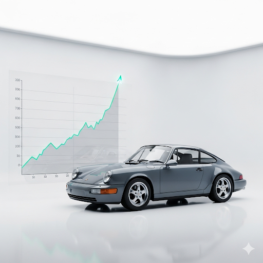
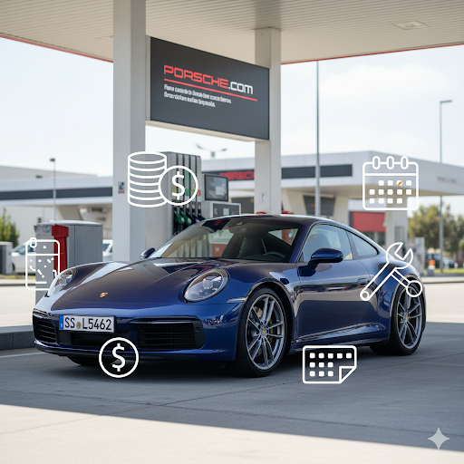
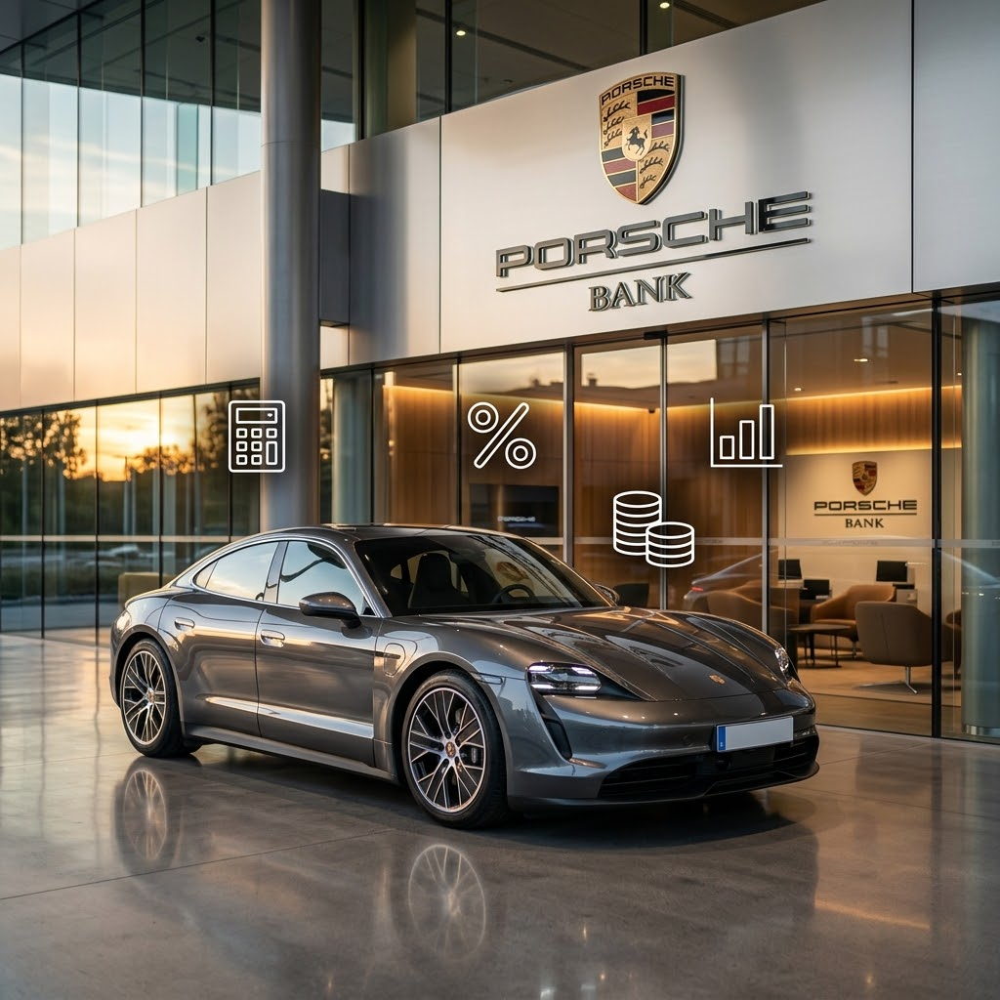

Hay coches que te llevan. Un Porsche te transforma. Descubre cuál es el tuyo con datos, no solo con pasión.
Descubre cómo elegir el tuyoConducir un Porsche es una experiencia que redefine la conexión entre el hombre y la máquina. Pero elegir el modelo correcto es un arte que requiere conocimiento. En mejorimposible.es te ofrecemos la información más completa y las herramientas más potentes para que tu decisión no sea solo pasional, sino también la más inteligente. Aquí empieza tu viaje hacia el Porsche perfecto.
Descubre qué modelo encaja contigo antes de mirar precios.

Responde 5 preguntas sobre tu presupuesto y tu forma de conducir y descubre tus modelos recomendados.
Descubrir →
¿Circuito, viaje o día a día? Encuentra el Porsche con la personalidad que encaja contigo.
Descubrir →
Compara la silueta, las medidas y las diferencias exactas entre dos modelos, lado a lado.
Descubrir →
Aprende qué extras son imprescindibles para el disfrute y el valor de reventa, y cuáles evitar.
Descubrir →La parte numérica: lanzamiento, reventa, financiación y coste total de propiedad.

Sigue la evolución del precio oficial de cada generación y descubre cuánto ha subido cada modelo con los años.
Descubrir →
Analiza la evolución de precios de segunda mano y descubre qué modelos son la mejor inversión.
Descubrir →
Calcula el gasto total a 5 años: depreciación, mantenimiento, seguro y más. Sin sorpresas.
Descubrir →
Simula tu cuota mensual, los intereses totales y compara financiar frente a pagar al contado.
Descubrir →Compara la propiedad, la fiscalidad y el coste total de cada opción con un simulador y tus propios números.
Descubrir →Fiabilidad y checklist de inspección para no llevarte sorpresas.
Lo que se dice y se comparte sobre Porsche ahora mismo.
"Al principio miré a mi alrededor y no encontré el coche de mis sueños, así que decidí construirlo yo mismo."— Ferry Porsche